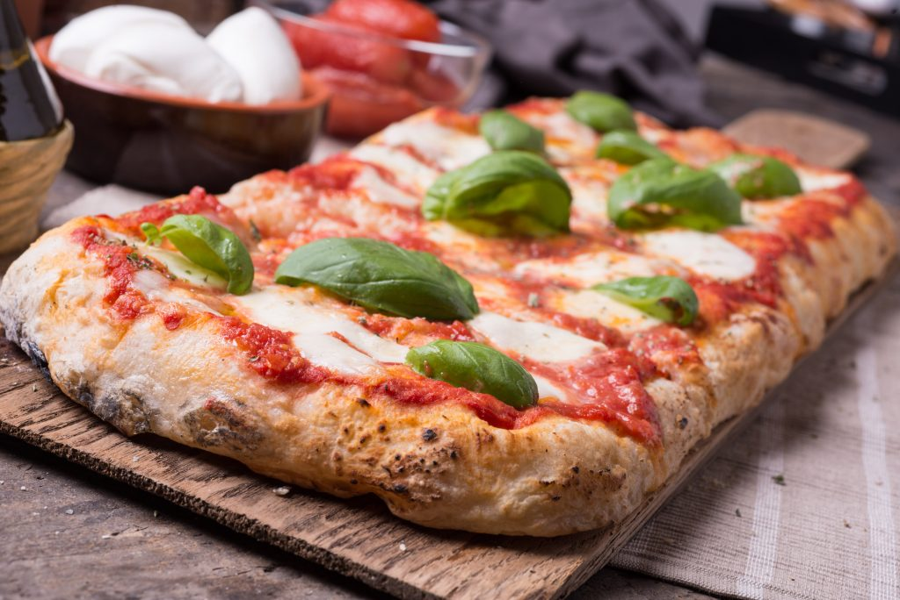

Pizza Recipe

Description
The best Italiam Pizza, you can make at your home"
Ingredients
- 350 grams of weak/medium flour
- 250 grams of Manitoba flour
- 3 grams of fresh yeast
- 1 tablespoon of extra virgin olive oil
- Salt to taste (1/2 teaspoon)
- Water at room temperature (about 400 grams)
Steps
- Dissolve the yeast in a little water using your hands and then, once melted, add 500 grams of the flour and the remaining water. Knead, divide into loaves or leave all the dough together and let rise for about 8 hours
- Take the pizza dough and string it adding the remaining 100 grams of flour, oil and salt. Knead by hand or with the kneader until all the ingredients are well mixed together
- Transfer the pizza dough to a floured surface and work it with your hands so to avoid lumps. Once ready, divide it into pieces and let it rise for 1 hour more
- Spread the dough on lightly floured baking sheets and let it rest for 30 minutes
- Once the hour has passed, take the pizzas, spread with your condiment of choice sauce and sprinkle with toppings
- Bake your pizza until the crust is browned (on a regular oven, about 20-25 minutes should be enough)
- Serve hot.